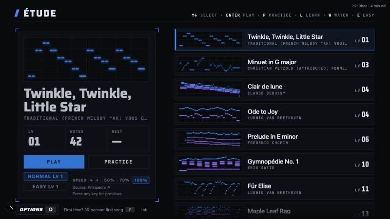
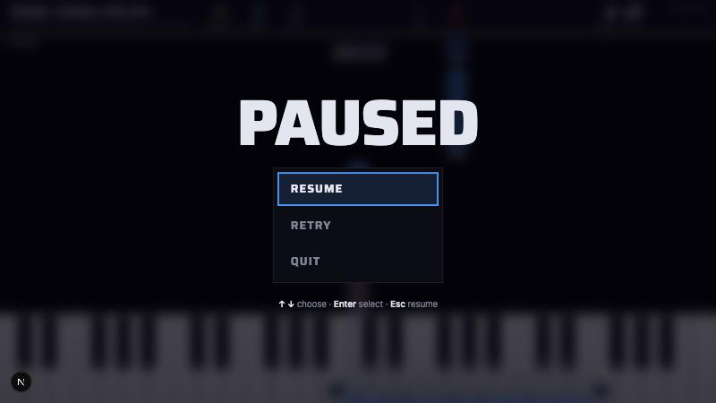

Six character sheets from codex, then pose sets for the worker's top two. Say a sheet in chat, or set
sheet: sheet-NN.png in spikes/mascot/PICK.md. This page saves nothing.
Worker's pick: sheet-06. Every pose has a candidate passing every check, and it still reads at HUD size.

